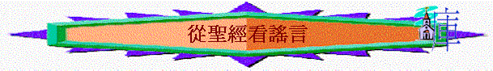

「不可隨夥佈散謠言；不可與惡人連手妄作見證。」出23:1
聖經中的謠言原來有空虛、說謊、虛妄、無價值等意思，有譯本譯為錯誤的報告，《韋伯斯特英文大字典》認為，謠言Rumor是一種缺乏真實根據，或未經證實、公眾一時難以辨別真偽的閒話、傳聞或輿論。的確在今天資訊發達的社會中，我們每天從朋友、從報章、從網上、從手機、從Facebook、從WhatsApp、從微博中收到很多消息與報告，有一些是真實的事，但有一些則是空虛、說謊、虛妄、無價值或未經證實的報告；例如在幾年前，一名14歲少年盜用「明報新聞網」的名義，在互聯網上廣泛散佈「香港宣布成為疫埠」的謠言，引起公眾搶購糧食。政府其後公開澄清，並無打算將香港宣布為疫埠，事件得以平息。男童事後被捕，被判接受社會福利署監管12個月。[i]原來在現今的社會中，真是有很多人會造謠生事的；但我們不禁地問：「為何從古至今會有這麼多謠言產生？」我們又如何去面對呢？以下文章內容會從聖經中探討有謠言的原因及基督徒又如何面對。
一.讒謗他人
「他不以舌頭讒謗人，不惡待朋友，也不隨夥毀謗鄰里。」詩
15:3
「我怕我再來的時候，見你們不合我所想望的，你們見我也不合你們所想望的；又怕有紛爭、嫉妒、惱怒、結黨、毀謗、讒言、狂傲、混亂的事。」林後
12:20
聖經提及「讒謗」及「讒言」，指人作出刻意錯誤的說話來傷害人，為何人會散佈傷害別人但是錯誤的說話呢？可能由於嫉妒、惱怒某人，或與某人有紛爭的事，所以故意散佈毀謗某人的說話。曾經有一段新聞記載Ａ女士
有時我們對上司、對同學、對師長、對肢體也會有爭執，也可能會有紛爭、嫉妒、惱怒的情況，但我們要小心，這些血氣的情緒可能使我們作出不理智的行動，不經意下說了一些未有求證再加上自己氣憤的說話，別人聽到可能放在網中，我曾見有一些肢體對某明星或某人有一些極度的不滿，他們就在FACEBOOK開了反XXX的區，不同的人加上了自己的感受及未經求證的批判，讒言就慢慢產生！我們要儆醒，聖經說我們不能以舌頭讒謗人的，若我們真是嫉妒、惱怒某些人，求神使我們先勒住我們的舌頭，先在神面前處理自己的感受，學習愛是不嫉妒，愛是不輕易發怒的功課，也禁止在任何的情況下發出一些不負責的言語來！
二.戲笑同伴
「淫詞、妄語，和戲笑的話都不相宜；總要說感謝的話。」弗
5:4
有謠言的其中一個原因是有戲笑的話；人可能存戲笑心態，在群體中散佈一些不真實或誇大的說話；曾有調查指出香港中學生有多達3成人曾受到網絡欺凌，而男生情況比女生嚴重，情況令人關注。在欺凌方式上，以網上辱罵嘲笑最多，有18.7%中學生曾身受其害。亦有肆意毀謗或發放別人不雅照片、影片，甚至言詞間的性騷擾等。[iii]
聖經說淫詞、妄語，和戲笑的話都不相宜！比方我們覺某男同學說話有點娘子腔，就嬉笑他是同性戀者（GAY），在與別人閒談中常以此取笑他，這種戲笑的話加上未經求證的事就做成謠言了，我們作為神的兒女卻不可這樣，因我們唱詩讚美神的創造，同一時間我們的口也戲笑照神形像造的人，是不應該的，我們不要效法世界，切記不要成為任何網絡欺凌及取笑人的一份子！
三.口吐謊言
「吐謊言的假見證，並弟兄中布散紛爭的人。」箴
6:19
「所以，你們要棄絕謊言，各人與鄰舍說實話，因為我們是互相為肢體。」弗
4:25
謊言也是謠言的核心內容，人可能因為利益，或喜愛說謊而講出一些不負責不實的話來，在今年六月韓國法院裁定，三名韓國男子散布關于朝鮮核反應堆爆炸的謠言，通過網絡聊天工具散播謠言，稱朝鮮寧邊核設施一座輕水反應堆爆炸，高濃度放射性物質泄漏，可能隨西北季風飄至韓國。令股票市場產生波動，而從中獲利約1.73萬美元。法庭判處他們不同期限監禁。[iv]
或許我們不會因財散佈謊言，但可能我們會覺得間中說一些不實話也不是一件嚴重的事，比方在每年
四.心存疑恨
「她丈夫生了疑恨的心，疑恨她，她是被玷污，或是她丈夫生了疑恨的心，疑恨她，她並沒有被玷污，這人就要將妻送到祭司那�堙A又為她帶著大麥麵伊法十分之一作供物，不可澆上油，也不可加上乳香；因為這是疑恨的素祭，是思念的素祭，使人思念罪孽。」民
5:14-15
舊約聖經提及疑恨的事，在今天的社會也有很多疑恨的事情，自己在牧會時，也收到一些不記名人士傳真的資料，說某某教會出現什麼問題，某某傳道犯什麼罪。當我們收到或自己懷疑的事情，又應怎樣處理？舊約聖經提及若丈夫懷疑妻子不忠時，不是叫人將自己的疑恨與身邊的人私下議論或散佈與其他人，爭取別人的認同及更多人的同情，聖經教我們乃是要來到神面前求證，獻上疑恨的素祭，被人懷疑妻子也要用行動表明自己是否無辜。
新約聖經也是一樣，若我們想起一個弟兄得罪我們，不是要我們將弟兄的惡事即時傳開去，乃是單獨與那弟兄交通，當面求證是否真實，若是真實，在主裡面要指責弟兄及挽回弟兄，所以若我們今天收到很多令人懷疑的事後，最好的方法，是求證，要與當時人對話，不要容許自己疑恨的心不斷膨脹，因而產生了不必要的妄論及錯誤的毀謗。
五.播散傳言
「乖僻人播散紛爭；傳舌的，離間密友。」箴
16:28
「火缺了柴就必熄滅；無人傳舌，爭競便止息。」箴
26:20
人的謊言、人的讒言、人的戲言、人的疑恨若沒有人去傳開，沒有傳舌的人，謠言就不會產生；
作為信徒，我們要作一個不傳舌講是非的人，筆者在很多討論區或FACEBOOK中，時常見很多人將收到的第一手資料，用最快的速度，會放在（post）網站，但我不禁地問：「這些消息是否已證實了？」我也看到很多人會很快作出認同及讚悅（like）的回應，他們似乎已確定事件是千真萬確的，值得閱覽的，之後其他人會很快透過不同途徑傳開去（share
），這第一手的資料很快地會變成萬人讚悅的謠言了！我們要小心，當我們收到一些未經證實的事，不要輕易向傳出者作出認同的回應，不要輕易將該連結消息傳開去，否則我們就是那造謠者的幫兇，更助長傳言的流通，也鼓勵有心或無心的做謠者繼續很快將收到的第一手資料放在網站；的確，沒有人傳舌，謠言也會被終止！
六.輕信消息
「大衛對掃羅說：「你為何聽信人的讒言，說大衛想要害你呢？」撒上
24:9
但謠言最可怕的地方不是有人傳舌，而是竟有人相信！在上年有大批香港人誤信內地謠言，以為食鹽因海水有輻射受污染，或食碘鹽可抗輻射而蜂擁搶鹽，過百斤鹽在10分鐘被掃光，有雜貨店將每包1.5元的鹽抬價至20元。非理性搶購更蔓延至豉油、雞粉，甚至搶米。[vi]這真是一件荒誕的事！為何會有人相信呢？或許中國人有一些觀念很影響我們，例如：風月來風，未必無因……寧可信其有，不可信其無。所以即或很荒誕的事，人寧願相信先，人怕若不信，會有「蝕底」！
聖經卻不是教我們這樣的！我們要有屬靈的悟性及知識，要懂分辨是非，當我們收到某人對另一人的指控時，聖經教我們須有兩三個見證人作準，否則不接收有關個案，作為有悟性的基督徒，我們不要誤信未經定準的事！人若在網上搜尋器或一些類似百科全書的資料庫中，尋找了一些資料及消息，我們也不要輕易相信，因最近也有人發現被人推崇的百科全書網站也有錯誤的資料，我們要懂分辨：資料來源來自是什麼地方？資料是否在單一網站發放，而其他網站中有沒有類似評論或持相反意見？有沒有見證人或合法公認組織證實？若我們在群體生活中，聽到了一些對某人不好的消息時，也不要很快確信已是千真萬確的事，筆者始終覺得若沒有與當時人對話的情況下即誤信對當時人不利的消息，是對人極不公平的事，求神給我們一個公允及持平的心面對不同的流傳。
出23:1說「不可隨夥佈散謠言；不可與惡人連手妄作見證。」但願我們一生作一個不隨夥佈散謠言的人，不在教會、不在群體、不在網上世界中佈散未經證實的事，我們也能學識分辨每日收到千變萬化的消息，作一個有智慧而誠實的基督徒。
[i] http://www.mingpao.com
[ii] http://www.rclawyer.com.tw/
[iii]
http://paper.wenweipo.com/
[iv] http://www.takungpao.com.hk/sy/2012-06/29/content_587921.htm
[v] http://evchk.wikia.com/wiki/%E7%B6%B2%E7%B5%A1%E8%AC%A0%E8%A8%80
[vi] http://hk.news.yahoo.com/article/110317/23/nalk.html#